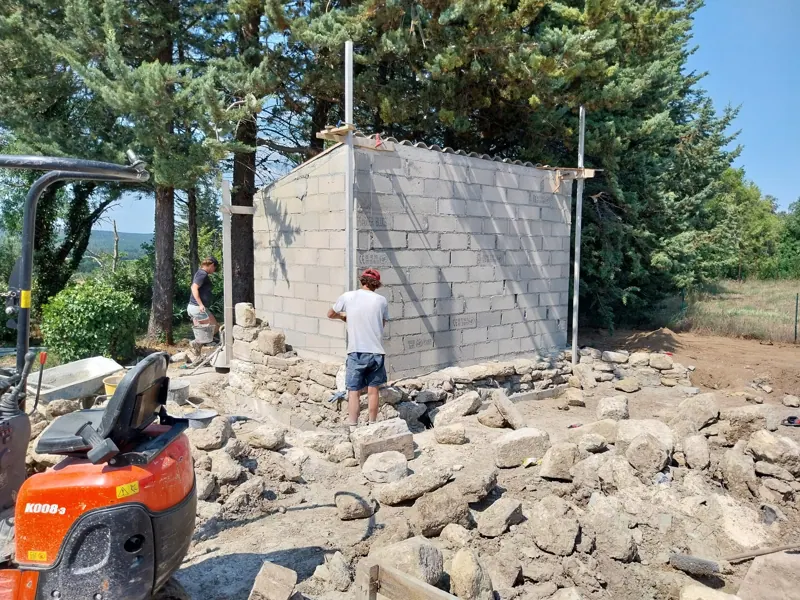
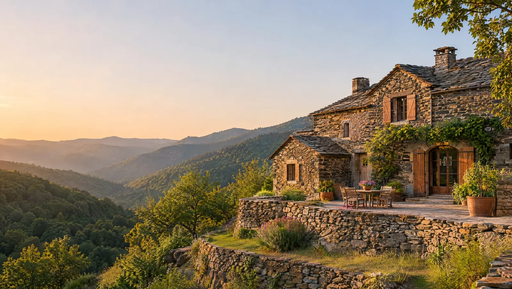
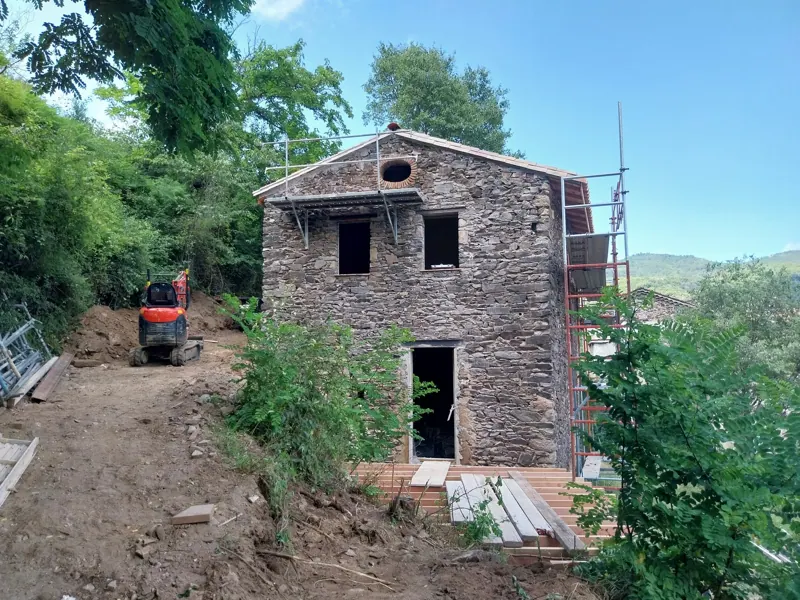
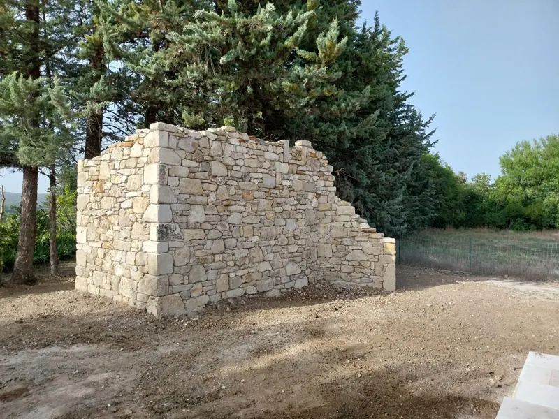
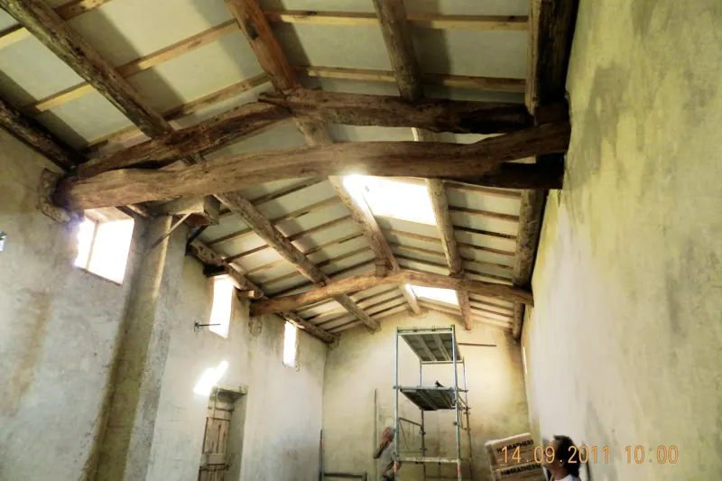
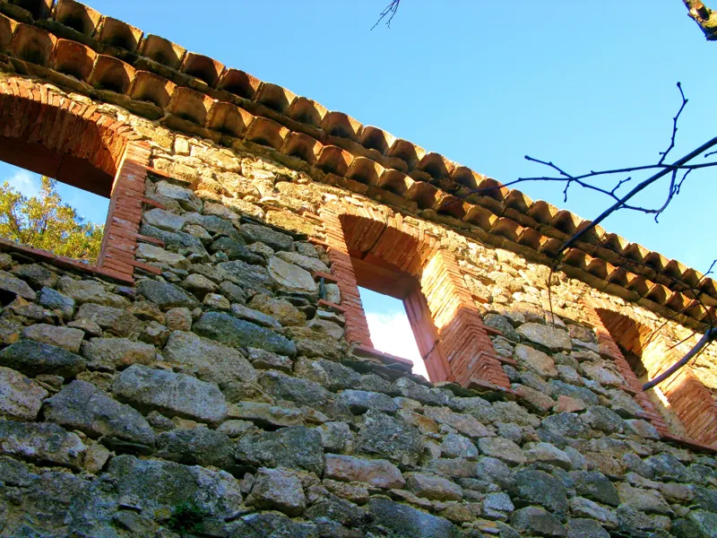
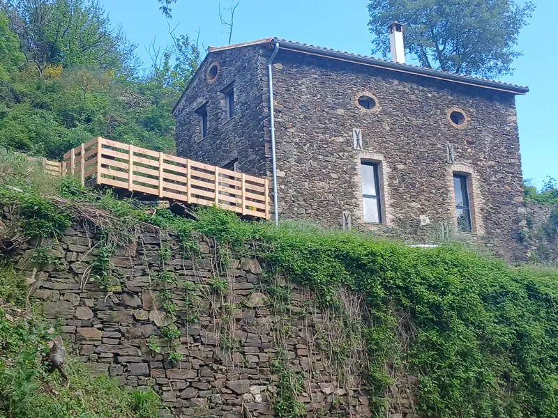
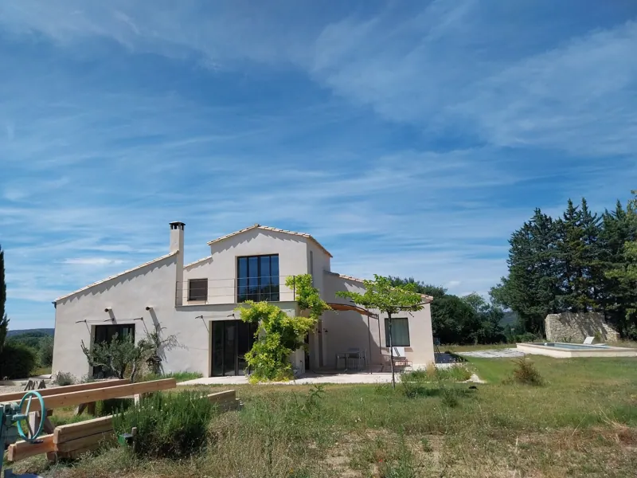
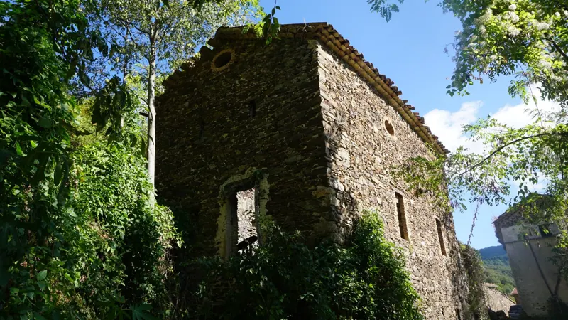

01
Maçonnerie générale & gros œuvre
Fondations, dalles, murs porteurs, coffrage béton : une structure solide, calculée et bien exécutée.

Maçon éco-artisan · Saint-André-de-Majencoules (30)
Gros œuvre, pierre sèche, rénovation de mas et rénovation énergétique. Avec des matériaux locaux et biosourcés, parce qu’on aime bâtir durable.
Savoir-faire
Technicien en génie civil et maçon de métier : on prend votre projet tous corps d’état, des fondations aux finitions, avec un seul interlocuteur.

Fondations, dalles, murs porteurs, coffrage béton : une structure solide, calculée et bien exécutée.

On redonne vie aux mas cévenols et aux bâtisses anciennes, dans le respect du bâti d’origine.

Murs de soutènement, restanques, murets : la pierre du pays, montée dans les règles de l’art.

Isolants biosourcés (chanvre, fibre de bois, chaux) pour un confort durable, été comme hiver.

Réfection de toiture, charpente, couverture tuiles ou lauzes, et isolation de toiture.

Terrasses sur terrain en pente, escaliers, dallages et aménagements qui s’intègrent au paysage.

Enduits à la chaux, rejointoiement de pierre et ravalement de façades, pour protéger et embellir.
Matériaux locaux et biosourcés : chaux, chanvre, pierre, bois, terre crue et terre cuite.
Avant / après
Mas cévenol en ruine : murs repris en pierre, toiture en lauzes refaite, menuiseries neuves.
Réalisations

Pourquoi nous
Notre nom dit tout : du travail franc, solide, sans artifice. Mais derrière le béton brut, il y a de la précision et beaucoup de soin.
Méthode
On se déplace chez vous, on écoute votre projet et on vous remet un devis clair et détaillé.
Planning, commandes des matériaux, démarches et aides RGE : tout est calé avant le premier coup de pelle.
Fondations, maçonnerie, structure, toiture : le cœur du chantier, mené proprement et dans les temps.
Enduits, rejointoiement, isolation, détails : c’est là que le travail bien fait se voit.
On fait le tour du chantier ensemble, vous validez, on vous laisse un lieu propre.
Rénovation énergétique
Pour l’isolation et la toiture, beaucoup d’aides publiques ne sont accessibles que si les travaux sont réalisés par une entreprise certifiée RGE. C’est notre cas.
Les montants dépendent de votre situation : on vous oriente au moment du devis, et le conseiller France Rénov’ de votre secteur peut faire le point avec vous.
Avis Google
Colas a repris notre vieux mas de A à Z : murs en schiste rejointoyés à la chaux, toiture refaite. Travail soigné, et le chantier était rangé tous les soirs. On recommande les yeux fermés.
Rénovation d’un masNotre mur de restanque s’était effondré après les pluies d’automne. Reconstruit en pierre sèche dans les règles de l’art : on dirait qu’il a toujours été là.
Mur de soutènementDalle et escalier en béton pour notre terrasse, sur un terrain très pentu. Devis clair, délais respectés, finitions impeccables. Merci à toute l’équipe !
Terrasse & dalle bétonIsolation de nos combles en fibre de bois. Colas nous a bien expliqué les aides possibles grâce à sa certification RGE. La différence se sent déjà cet hiver.
Isolation RGETrès bon contact avec Colas, toujours joignable et de bon conseil sur les matériaux. Un artisan qui aime son métier, et ça se voit dans le résultat.
MaçonnerieEnduit à la chaux sur toute la façade : le rendu est magnifique et naturel. Équipe ponctuelle, chantier laissé nickel. Nous referons appel à eux.
Enduit de façadeZone d’intervention
Basés à Saint-André-de-Majencoules, on intervient dans les vallées autour de chez nous :
Votre commune n’est pas dans la liste ? Appelez-nous, on en parle.
Devis gratuit
Décrivez-nous vos travaux en quelques lignes : Colas vous rappelle pour organiser une visite et établir votre devis, gratuitement.